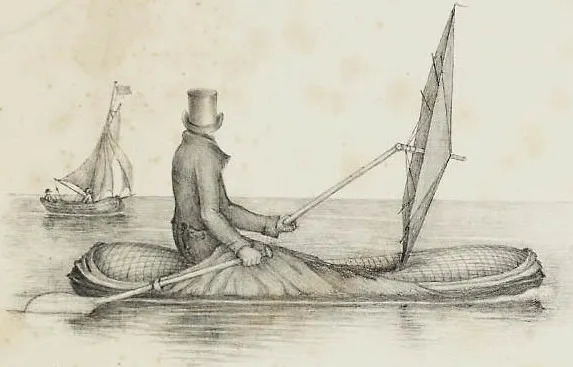
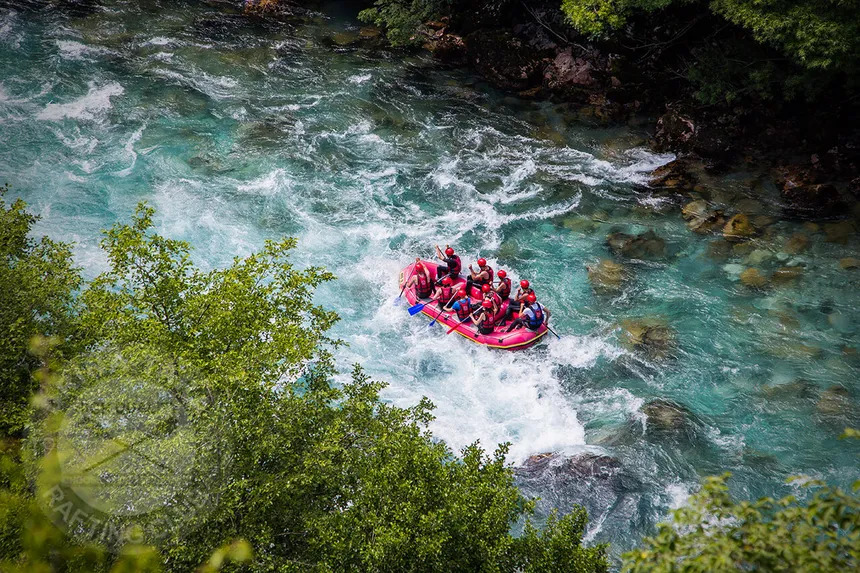
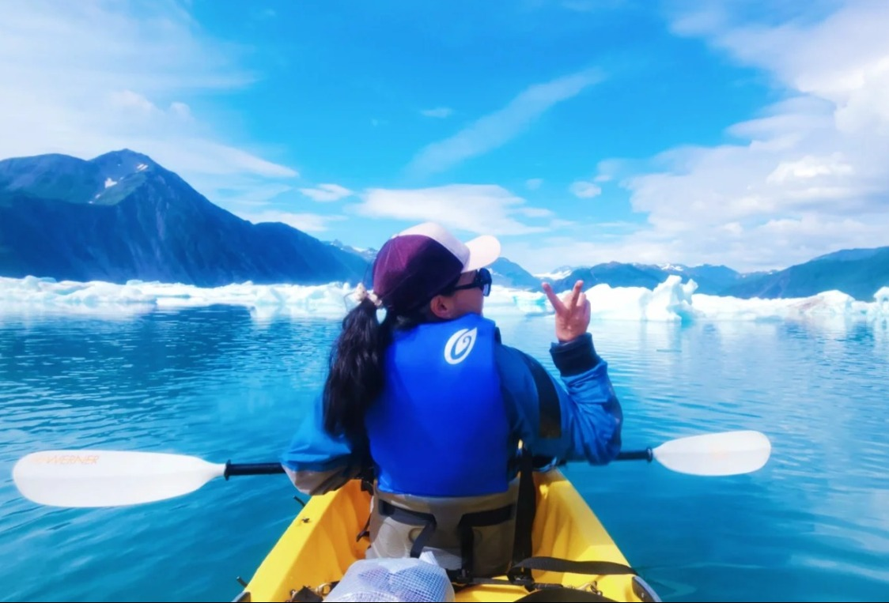
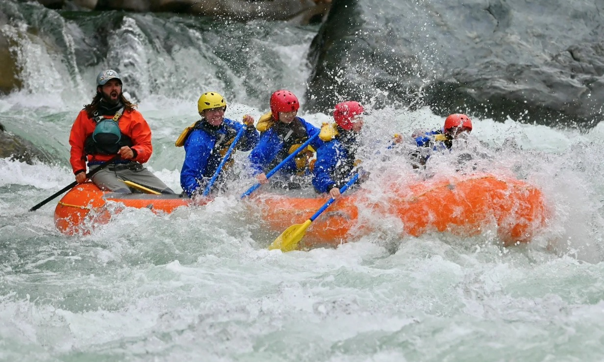
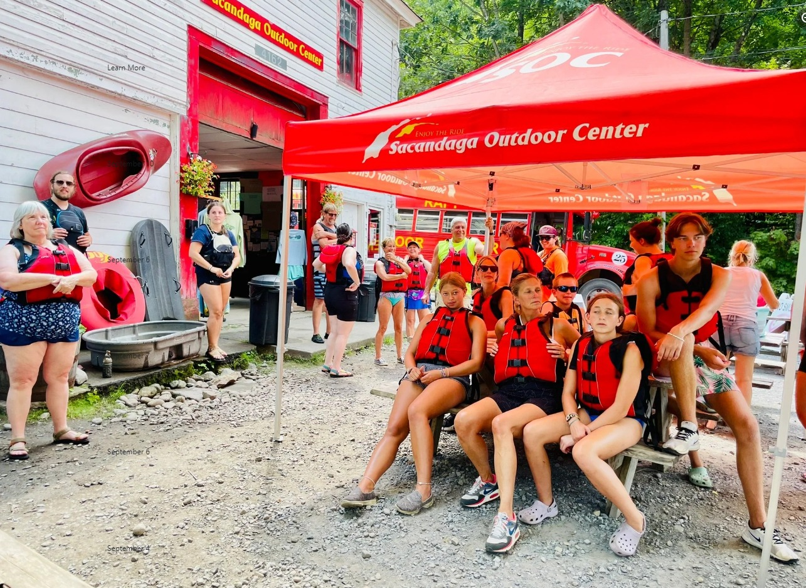

White Water Rafting
In a thrilling rafting experience, we immerse ourselves in the adrenaline rush of navigating turbulent waters, unleashing a unique fusion of excitement and nature. On this fascinating water journey, we encounter challenging rapids that demand teamwork and navigational skills. Roaring waters surround us as we enjoy the spectacular beauty of the surrounding natural environment. From the unique perspective of the raft, we embrace the magnificence of the landscape as the current carries us through steep canyons and lush riparian forests. The rafting experience offers not only intense thrills, but also the opportunity to connect with nature and forge unforgettable memories.
Rafting has its roots in the need to navigate whitewater for exploration and trade. Originating in the wild rivers of North America and New Zealand, modern rafting evolved from the log rafts used by pioneers. As navigation techniques improved, rafting became an exciting adventure sport in the 1970s. It quickly spread around the world, attracting enthusiasts and tourists alike. Today, rafting is not only an exciting activity, but also a way to connect with nature and experience camaraderie through tumultuous waters.
History
Rafting, which originated in the 1840s, became popular in the 1970s. In 1842, John Macgregor created the first inflatable canoe. Modern rafting evolved in the 1940s and 1950s, led by expeditions on the Colorado River. Today, it is an exciting water sport practiced globally to enjoy turbulent waters.
Adventures Awaits Your
Rafting offers a thrilling range of experiences that awaken the senses and challenge the limits. As you descend turbulent rapids, adrenaline flows as you face the fury of the water. Team cooperation becomes a vital bond to overcome aquatic obstacles, creating shared memories of excitement and camaraderie. The scenic nature surrounding the rivers provides a breathtaking backdrop, from majestic canyons to lush riparian landscapes. As you plunge into the churning waters, the connection with nature and the intensity of the experience make rafting an unforgettable adventure, merging the daring with the serene beauty of the aquatic environment.
Some Experiences
Kayaking has brought me so many memories, in Ann Arbor, in Hawaii, in Miami, in Croatia, in Puerto Rico... This time in the glaciers of Alaska, I often looked up and exclaimed "Wow" when I was concentrating on rowing. I really need these memories to move on. By Sarah Holder
Come And
My first time whitewater rafting was at Letchworth State Park near Rochesttwo years ago, and being a novice, I opted for primary and secondary rafting, which I didn't expect to be exciting but interesting enough.This time, as I was able to have experience last time, I invited my friends to challenge us to complete the circuit without any failures and it was the best thing we did as everything went great, I love this sport. By Evelyn Mower
Have Fun
We were thinking about an activity as a family since we had not been together as a family for a long time, one of my sons told us that they were going to make a mini championship between families on Rafting, so we told the whole family to try to win the competition, everyone agreed, that surprised me, then the day came and we had a great time, We learned how to be in a small boat in strong waters, I must comment that it is a somewhat risky sport because you always have to be careful with the children and with the rocks that are loose and can damage the boat or some of us, we won the competition but I feel that I won again my family, we had a great time, grateful for the sport that brought us together again. By Eric Palmer